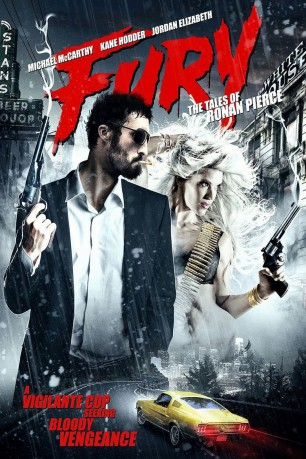

#5887 Fury: The Tales of Ronan Pierce
 gesehen am 04.04.2017
gesehen am 04.04.2017
 
 IMDB-Wertung: 5.0 / 10
IMDB-Wertung: 5.0 / 10  Metascore: 0
Metascore: 0 
Der Polizist Ronan Pierce (Michael McCarthy) hat mit einer schweren Vergangenheit zu kämpfen. Und nachdem seine Frau McKenzie (Heidi Pitts) entführt wird, kennt seine Lust auf Rache keine Grenzen mehr. So verfolgt er akribisch jede noch so kleine Spur auf der Suche nach seiner Liebsten. Die Hinweise führen in die Unterwelt einer Stadt voller Psychopathen, Gangs, Korruption – allesamt stehen sie unterstehen sie dem Luna-Kartell. Die kriminelle Vereinigung geht ungehindert und konkurrenzlos ihren bösen Machenschaften nach.
Jahr: 2014
Dauer: 91 Minuten
FSK: 18
Land: USA Studio: Uncork'd EntertainmentTonspuren: DTS - ,
Untertitel:
Auflösung: 1080p (1920x856) Größe: 5222 MB
Genre: Action, Thriller, Horror, Abenteuer
Regisseur: Kevin A. McCarthy, Edward Payson
Drehbuch: Kudos Film and Television
Soundtrack:
Darsteller:
- Michael McCarthy als Ronan Pierce
 Kane Hodder als Eddie White
Kane Hodder als Eddie White- R.A. Mihailoff als Captain Pete
- Harry Aspinwall als Lukas Lodder
- Brad Potts als Rex Gallagher
- Rick Montgomery Jr. als The Mad Doctor
- Joel D. Wynkoop als Police Captain O'malley
- Circus-Szalewski als Senator David Carrawell
 Robert Crayton als Lazarus
Robert Crayton als Lazarus- David Astone als The Dragon
- Anthony Ambrosino als Chip 'The Abusive Fisherman'
- Emmalyn Anderson als Gagged Girl #2
- Ryan Bonnick als Magnum
- Cezar Constantine als Carlos, bully on bus
- Patrick Vincent Curran als Bob 'The Creepy Fisherman'
- David Dillon als Commander Dillon
- Aurora Grabill als Harbor City Jane
- Maria Stamenkovic Herranz als Lucy
- Michael Rodriguez als Tony
- Somali Rose als Therapist
- Ariel Zuckerman als Cross
- Jordan Elizabeth als Karina McCoy
- Wade Gallagher als Damien Logan
- Tovah Duffaut als Lizzy
- James Knowlton als Reggie
- Heidi Pitts als Mckensie
- Armand Alvarez als Cutting Doctor
- Nick Bada Bing als Whitehouse Bartender
- Ivana Bellarado als Cross's slave girl
- Michelle Brown als Hot Bartender
- Narayana Cabral als Ninja
- Trina Cadle als Punk Stripper
- Linda Carpenter als Harbor City Jane
- Ryan Carter als Billy Good
- Chelsey Cayer als Harbor City Jane
- Lisa Civitello als Harbor City Jane
- Julia Coleman als Suzy Pierce
- Ashley Collins als Whitehouse slave girl #1
- Drew Cooper als Caliber
- Matt Daggy als Wade
- Ashlie Dawn als Jenny Gallagher
- Fleur Yvette De Kine als Lexa
- Amanda Defrance als Stage Girl
- Nicholas Delmenico als Ninja #4
- Kimberly Delvicario als Harbor City Jane
- Tabbatha Edwards als Harbor City Jane
- William Ellis als Trey
- Romeo Steven Ellorin als Romito
- Nessa Ferreira als Harbor City Jane
- Wayne Francis als Prophet
Datei: X:\FSK18-2014\Fury The Tales of Ronan Pierce (2014, FSK18, 1920x856).mkv seit 03.04.2017
Festplatte: FSK18
 Es gibt insgesamt 27 Filme in der Gruppe 'FSK18-2014'
Es gibt insgesamt 27 Filme in der Gruppe 'FSK18-2014'